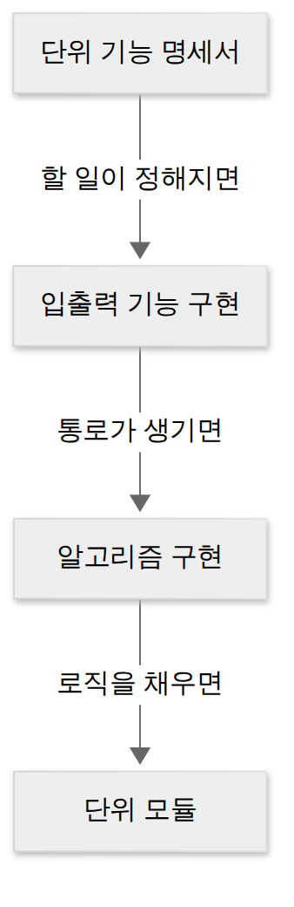
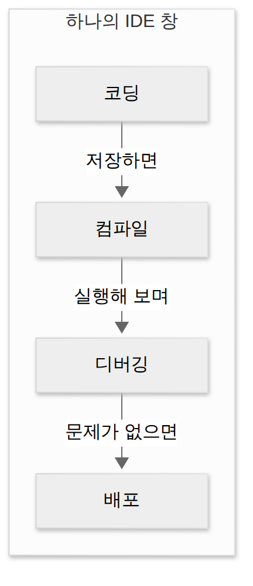
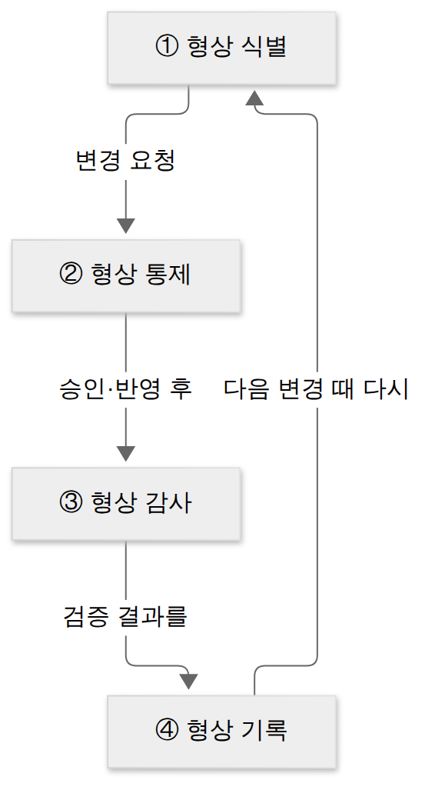
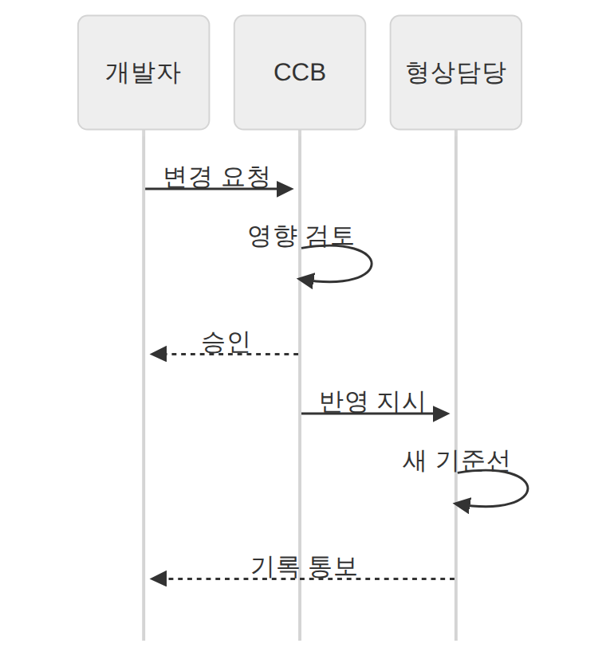

D021 · 단위모듈 구현·테스트와 IDE·협업·형상관리 도구
A6 어제 D020에서 방법론을 프로젝트에 맞게 고치고, 개발 표준과 프레임워크로 뼈대를 정했어요. 오늘부터는 그 뼈대 위에 실제 코드를 한 조각씩 올려요. A6 「통합 구현」의 두 세부항목 중 모듈 구현은 코드 한 조각을 만들고 검사하는 일이고, 통합 구현 관리는 그 조각들을 여러 사람이 만들고 바꾸는 동안 길을 잃지 않게 하는 도구 이야기예요.
- 단위 모듈의 정의와 구현 3요소를 설명하고, 단위 테스트의 화이트박스·블랙박스 관점과 드라이버·스텁을 구별할 수 있다
- IDE의 4기능과 협업 도구가 구현 단계에서 하는 역할을 설명할 수 있다
- 형상관리의 대상·기준선과 4활동(식별·통제·감사·기록)을 구별할 수 있다
- 버전관리 도구 3방식(공유 폴더·클라이언트/서버·분산 저장소)과 대표 도구를 짝지을 수 있다
1. 큰 그림 — 설계도에서 벽돌로
D010~D015에서 화면·구조·인터페이스를 설계했어요. 설계서는 지도이고, 오늘부터는 실제로 벽돌을 한 장씩 찍어 내는 단계예요. 벽돌 한 장이 금 가 있으면 담을 다 쌓은 뒤에야 알게 되니까, 찍자마자 두드려 보는 게 단위 테스트예요.
벽돌을 찍고 두드리는 일은 혼자 하지 않아요. 코드를 쓰고 돌려 보는 작업대(IDE), 팀원끼리 일과 대화를 나누는 통로(협업 도구), 누가 무엇을 언제 바꿨는지 지키는 장부(형상관리)가 처음부터 끝까지 깔려 있어요. 아래 그림이 오늘의 지도예요.
2. 단위 모듈 — 한 가지 동작만 하는 코드 조각
큰 그림에서 첫 파란 칸이 단위 구현이었어요. 왜 하필 작은 단위로 쪼갤까요? D012에서 배운 대로 모듈은 결합도가 낮고 응집도가 높아야 고치기 쉬워요. 설계에서 정한 그 독립성을 실제 코드로 옮기는 단계가 단위 모듈 구현이에요.
단위 모듈은 소프트웨어가 하는 여러 동작 중 한 가지 동작을 수행하는 기능을 모듈로 구현한 것이에요. 로그인 검증, 주문 금액 계산, 이메일 형식 확인이 각각 하나의 단위 모듈이 될 수 있어요. 이름이 processAndValidateAndSave인 메서드를 보면 이미 단위 모듈이 세 개 들어 있는 거예요.
단위 모듈은 세 가지를 차례로 갖춰 만들어요. 먼저 단위 기능 명세서로 이 모듈이 무엇을 받아 무엇을 돌려줄지 정해요. 다음 입출력 기능 구현으로 데이터가 드나들 통로(파라미터, 반환값, 다른 모듈·시스템과의 연결)를 만들어요. 마지막 알고리즘 구현으로 실제 처리 로직을 채워요.
순서에 이유가 있어요. 무엇을 할지(명세) 모르면 통로를 못 뚫고, 통로(입출력)가 없으면 로직이 데이터를 받을 수 없어요. 어제 D020에서 본 조직의 코딩 컨벤션은 이 세 단계 내내 지키는 공통 규칙이에요.

입출력이 프로세스 밖으로 나갈 때 — IPC
입출력 통로가 같은 프로그램 안의 함수 호출이면 간단해요. 그런데 서로 다른 프로세스끼리 데이터를 주고받아야 할 때가 있어요. 이때 쓰는 방법이 IPC(Inter-Process Communication, 프로세스 간 통신)예요. 프로세스 사이에서 데이터를 교환하고 실행을 조정하는 방법들을 묶어 부르는 말이에요.
공유 메모리는 두 프로세스가 같은 메모리 영역을 함께 읽고 써요. 빠르지만 동시에 쓰면 꼬이니 순서 조정이 필요해요. 파이프는 한쪽이 쓰면 다른 쪽이 읽는 한 방향 관이에요. 리눅스에서 ps | grep java의 |가 바로 파이프예요.
메시지 큐는 메시지를 큐에 쌓아 두면 받는 쪽이 꺼내 가요. 동료 책상 위 포스트잇 더미와 같아서, 동료가 자리에 없어도 붙여 두면 되고 동료는 돌아와서 차례로 떼어 읽어요. 소켓은 네트워크를 통해 통신하는 끝점이라 다른 컴퓨터의 프로세스와도 주고받을 수 있어요.
한 장 요약 — 네 방식의 차이는 “어디를 거쳐 가나”예요.
| 방식 | 어떻게 주고받나 | 특징 |
|---|---|---|
| 공유 메모리 | 같은 메모리 영역을 함께 읽고 씀 | 가장 빠르지만 동시 접근 조정이 필요 |
| 파이프 | 한쪽이 쓰고 다른 쪽이 읽는 관 | 기본은 한 방향, 주로 한 컴퓨터 안 |
| 메시지 큐 | 큐에 메시지를 넣고 꺼냄 | 받는 쪽이 바로 없어도 쌓아 둘 수 있음 |
| 소켓 | 네트워크 끝점끼리 연결 | 다른 컴퓨터의 프로세스와도 통신 |
3. 단위 모듈 테스트 — 찍자마자 두드려 보기
모듈을 만들었으니 이제 검사할 차례예요. 단위 모듈 테스트는 구현한 모듈 하나가 의도한 기능을 정확히 수행하는지 개별적으로 확인하는 테스트예요. 여러 모듈을 붙이기 전에 하는 이유는 단순해요. 지금은 버그가 이 모듈 안에만 있을 수 있어서 찾을 범위가 가장 좁아요.
두 가지 관점 — 속을 보느냐, 겉만 보느냐
화이트박스 테스트는 모듈의 내부 코드와 논리 경로를 보고, 분기와 경로가 빠짐없이 실행되는지 확인해요. 코드를 아는 개발자 쪽 관점이에요. 블랙박스 테스트는 내부를 보지 않고 명세서의 입력을 넣었을 때 기대한 출력이 나오는지만 확인해요.
두 관점은 경쟁 관계가 아니라 서로 빈틈을 메워요. 화이트박스는 명세에 없는 이상한 분기를 찾고, 블랙박스는 코드가 명세 자체를 빼먹은 경우를 찾아요. 경로 커버리지·동치 분할 같은 구체적 기법은 4주차 A8 테스트에서 다뤄요.
드라이버와 스텁 — 아직 없는 동료의 대역
단위 테스트의 현실적인 문제는 모듈이 혼자서는 실행되지 않는다는 거예요. 위에서 나를 불러 줄 상위 모듈도, 내가 부를 하위 모듈도 아직 다른 사람이 만드는 중일 수 있어요. 그래서 빈자리를 채우는 임시 모듈, 즉 대역을 세워요.
테스트 드라이버는 테스트 대상 모듈을 호출하는 상위 모듈의 대역이에요. 입력을 넣어 대상을 부르고 결과를 확인해요. 테스트 스텁은 테스트 대상 모듈이 호출하는 하위 모듈의 대역이에요. 스텁은 아직 입사 안 한 팀원 대신 앉혀 둔 마네킹이라 무엇을 물어도 정해 둔 대답 하나만 하지만, 대상 모듈은 그걸로 충분히 일을 진행해요.
현업 장면으로 옮기면 JUnit의 테스트 메서드가 대상 메서드를 부르고 assert로 결과를 확인하니 드라이버 역할이에요. Mockito로 만든 가짜 리포지토리가 고정 값을 돌려주면 스텁 역할이에요. 드라이버·스텁·테스트 케이스 등을 묶어 테스트를 돌리는 환경 전체를 테스트 하네스라고 해요.
테스트 케이스 — 맞았는지 판정할 기준
대역을 세웠으면 무엇을 넣고 무엇을 기대할지 적어야 해요. 그 문서가 테스트 케이스예요. “입력하면 잘 돼야 함”은 테스트 케이스가 아니라 소망이에요. 기대 출력을 적어 둬야 비로소 맞았는지 틀렸는지 판정할 수 있어요. 테스트 케이스는 아래 일곱 가지로 구성돼요.
| 구성요소 | 뜻 | 로그인 모듈 예 |
|---|---|---|
| 식별자 | 케이스를 구분하는 고유 번호·이름 | TC-LOGIN-003 |
| 테스트 항목 | 무엇을 테스트하는지 | 비밀번호 5회 오류 시 잠금 |
| 입력 명세 | 넣을 입력 데이터·조건 | 틀린 비밀번호 5번 연속 입력 |
| 출력 명세 | 기대하는 결과 | 계정 잠금 메시지, 상태 LOCKED |
| 환경 설정 | 필요한 하드웨어·소프트웨어 환경 | 테스트 DB, 잠금 횟수 설정 5 |
| 특수 절차 요구 | 수행할 때 필요한 특별한 절차 | 각 시도 사이 대기 없음 |
| 의존성 기술 | 다른 케이스와의 선후 관계 | TC-LOGIN-001(정상 로그인) 통과 후 |
4. IDE — 하나의 창에서 끝내는 작업대
앞에서 모듈을 만들고 테스트했는데, 그 작업을 하는 장소가 IDE예요. IDE가 없던 시절에는 편집기에서 고치고, 터미널에서 컴파일하고, 에러 줄 번호를 손으로 찾아갔어요. 지금 빨간 밑줄 하나에 짜증 나는 건 사치예요.
IDE(Integrated Development Environment, 통합 개발 환경)는 개발에 필요한 도구를 하나의 프로그램에 통합한 환경이에요. 시험에서 묻는 기능은 넷이에요. 코딩(편집기에서 코드 작성), 컴파일(실행 가능한 형태로 변환), 디버깅(중단점을 걸고 오류를 찾아 수정), 배포(완성한 결과물을 실행 환경에 내보냄)예요.
대표 IDE는 Eclipse, IntelliJ IDEA, Visual Studio, VS Code 등이에요. 요즘 IDE는 형상관리 도구(Git)와 빌드 도구(Maven·Gradle)도 품고 있어서, 오늘 뒤에서 볼 형상관리와도 같은 창에서 만나요. 빌드 자동화와 버전관리 명령어는 다음 주 D024에서 따로 봐요.

5. 협업 도구 — 코드 바깥에서 흐르는 정보
IDE가 한 사람의 작업대라면, 팀 작업에는 또 다른 문제가 생겨요. 이 버그는 누가 맡았는지, 그 API 스펙은 어디서 정했는지, 리뷰는 언제 하는지 같은 정보는 코드 안에 없어요. 협업 도구는 이런 정보를 한곳에 모아 여러 사람이 함께 일하게 돕는 소프트웨어예요.
협업 도구가 없으면 결정은 회의실 공기 속으로 사라지고, 반년 뒤 누군가 “이거 왜 이렇게 만들었어요?”라고 물을 때 아무도 답을 못 해요. 협업 도구는 그 결정을 글로 남겨 두는 장치이기도 해요.
한 장 요약 — 기능별로 보면 이래요. 분류 이름과 제품 이름은 이해를 돕는 예시이고 시험 암기 대상은 아니에요.
| 기능 | 하는 일 | 예시 |
|---|---|---|
| 이슈·작업 관리 | 버그·할 일을 등록하고 담당자·상태를 추적 | Jira, Redmine, GitHub Issues |
| 커뮤니케이션 | 실시간 대화·알림·화상 회의 | Slack, 사내 메신저 |
| 문서·지식 공유 | 스펙·회의록·결정 사항을 모아 둠 | Confluence, 위키 |
| 일정 관리 | 마일스톤·회의·마감 공유 | 공유 캘린더 |
6. 형상관리 — 변경의 장부
협업 도구가 사람 사이의 정보를 다룬다면, 형상관리는 산출물 자체의 변경을 다뤄요. 최종.doc, 최종_진짜.doc, 최종_진짜_수정본.doc이 폴더에 나란히 있다면 그 팀에 필요한 게 형상관리예요. 여러 명이 같은 산출물을 고치면 무엇이 최신인지, 누가 왜 바꿨는지 금방 흐려져요.
형상관리(SCM, Software Configuration Management)는 소프트웨어 개발 과정에서 생기는 변경 사항을 관리하는 일련의 활동이에요. 변경의 원인을 파악하고, 변경을 제어하고, 변경이 제대로 됐는지 확인해 관련자에게 알려요. 그 결과 개발 과정이 눈에 보이게 되고(가시성), 어떤 변경이 어디서 왔는지 따라갈 수 있게 돼요(추적성).
형상관리는 개발 전 단계와 유지보수 단계 모두에서 해요. 관리 대상도 소스 코드만이 아니라 계획서·분석서·설계서·테스트 케이스 같은 산출물 전체예요. 이렇게 관리 대상이 된 하나하나를 형상 항목이라고 불러요. D020에서 본 ISO/IEC 12207에서 형상관리는 지원 프로세스였어요. 개발 옆에서 전 과정을 받친다는 뜻이에요.
기준선(베이스라인) — 여기서부터는 함부로 못 고친다
형상관리를 이해하는 열쇠는 기준선(베이스라인)이에요. 기준선은 검토와 공식 승인을 거쳐 확정된 산출물의 기준 시점이에요. 그 전까지는 담당자가 자유롭게 고치지만, 기준선이 생긴 뒤의 변경은 정해진 통제 절차를 거쳐야 해요.
Git에 익숙하면 릴리스 태그를 떠올리면 돼요. v1.0 태그를 찍은 뒤 그 내용을 바꾸고 싶으면 태그를 몰래 옮기는 게 아니라, 변경을 승인받아 v1.1을 새로 찍어요. 이전 기준선은 그대로 남아 있어 언제든 돌아갈 수 있어요.
형상관리 4활동
기준선을 중심으로 형상관리는 네 가지 활동을 해요. ① 형상 식별은 관리할 대상을 정하고 이름과 관리 번호를 붙여 계층 구조로 정리하는 일이에요. 이름표가 없으면 무엇을 관리하는지조차 말할 수 없으니 맨 처음이에요.
② 형상 통제는 식별된 형상 항목에 대한 변경 요구를 검토하고, 승인된 변경이 기준선에 반영되도록 조정하는 일이에요. 변경 요청을 받아 영향을 따지고 승인·반려를 정하는 곳을 형상 통제 위원회(CCB, Configuration Control Board)라고 해요.
③ 형상 감사는 기준선의 무결성을 평가해서, 변경이 요청대로 정확히 반영됐는지 확인하고 공식적으로 승인하는 일이에요. ④ 형상 기록은 식별·통제·감사의 결과를 기록하고 보고하는 일이에요. 형상 상태 보고라고도 불러요.

변경 하나가 실제로 지나가는 길을 사람 중심으로 보면 아래와 같아요. 개발자가 요청하고, CCB가 영향을 검토해 승인하고, 형상 담당자가 반영해 새 기준선을 만들고 기록을 알려요.

출제자는 “형상관리는 소스 코드만 대상으로 한다”, “유지보수 단계에서만 한다”를 번갈아 내며 개발자 출신 수험생의 직업병을 노려요. 매일 Git으로 코드만 관리하다 보면 형상관리 = 코드 버전관리로 좁혀 생각하기 쉬우니까요.
7. 버전관리 도구 3방식 — 이력을 어디에 두나
형상관리 4활동을 사람이 손으로 하면 금방 지쳐요. 그래서 변경 이력을 저장하고 되돌리는 일을 맡는 버전관리 도구가 형상관리의 실무 도구가 돼요. 도구는 이력을 저장하는 위치에 따라 세 방식으로 나눠요.
공유 폴더 방식은 버전 파일을 공유 폴더 하나에 두고, 개발자가 매일 자기 PC로 복사해 작업한 뒤 다시 폴더에 올려요. 구조는 단순하지만 누가 덮어썼는지 놓치기 쉬워요. 대표 도구는 SCCS, RCS예요.
클라이언트/서버 방식은 중앙 서버 하나에 저장소를 두고, 개발자는 서버에서 작업 사본을 받아 고친 뒤 서버에 올려요. 이력이 한곳에 모여 관리가 쉽지만, 서버가 멈추면 이력 조회도 커밋도 멈춰요. 대표 도구는 CVS, SVN이에요.
분산 저장소 방식은 원격 저장소가 있지만 각 개발자 PC에도 저장소 전체가 복제돼요. 그래서 서버가 쉬는 날에도 내 노트북에서 커밋을 계속할 수 있어요. 비행기 안에서 커밋 열 개를 쌓아 두고 착륙하자마자 push하는 사람이 실제로 있어요. 대표 도구는 Git, Mercurial, Bazaar예요.
한 장 요약 — 세 방식을 이력 위치와 대표 도구로 비교하면 이래요. 체크아웃·커밋 같은 용어와 SVN·Git 명령어는 D024에서 다뤄요.
| 방식 | 이력이 있는 곳 / 서버가 멈추면 | 대표 도구 |
|---|---|---|
| 공유 폴더 | 공유 폴더 한 곳 / 폴더에 접근 못 하면 작업 공유 중단 | SCCS, RCS |
| 클라이언트/서버 | 중앙 서버 한 곳 / 이력 조회·커밋 모두 멈춤 | CVS, SVN |
| 분산 저장소 | 원격 + 각 PC의 로컬 저장소 / 로컬에서 커밋 계속 가능 | Git, Mercurial, Bazaar |
8. 한 장 정리
오늘 개념이 다섯 개라 많아 보이지만, 공장에 비유하면 한 줄로 꿰어져요. 벽돌을 찍고(단위 모듈), 두드리고(단위 테스트), 작업대에서(IDE), 동료와 말을 맞추며(협업 도구), 출고 장부에 적는(형상관리) 하나의 공정이에요.
한 장 요약 — 오늘 나온 다섯 개념을 “무엇을 하나 / 왜 필요한가”로 나란히 놓으면 이래요.
| 개념 | 무엇을 하나 | 왜 필요한가 |
|---|---|---|
| 단위 모듈 구현 | 한 가지 동작을 하는 기능을 명세서 → 입출력 → 알고리즘 순으로 구현 | 설계의 독립성을 코드로 옮기려고 |
| 단위 모듈 테스트 | 모듈 하나가 명세대로 동작하는지 개별 확인(드라이버·스텁 사용) | 버그 위치가 가장 좁을 때 잡으려고 |
| IDE | 코딩·컴파일·디버깅·배포를 한 프로그램에서 처리 | 도구 사이를 오가는 낭비를 줄이려고 |
| 협업 도구 | 이슈·대화·문서·일정을 함께 관리 | 사람 사이의 결정과 진행을 남기려고 |
| 형상관리 | 산출물 변경을 식별·통제·감사·기록 | 누가·언제·왜 바꿨는지 추적하려고 |
9. 시험 포인트·암기 단서
지금까지의 설명을 다 읽었다면 아래 박스로 정리해요. 함정은 대부분 “범위를 좁히기”와 “방향 뒤집기”예요. 출제자 입장에서는 정의 한 단어만 바꿔 끼워도 새 문제가 되니, 이 두 수법은 재활용률이 아주 높아요.
10. 오답 복습 — 시스템 경계, 도출 vs 확인, 일일 스크럼
세 문제는 지난주에 한 번 틀린 구면이에요. 다시 만났을 때 이름보다 기준 하나를 먼저 떠올리면, 이번에는 인사만 하고 지나갈 수 있어요.
D015-1 내부 vs 외부 인터페이스. 연결 상대가 이름이 그럴듯한 “시스템”이어도 판단 기준은 하나예요. 우리 시스템의 경계 안에서 끝나면 내부, 경계를 넘어 다른 기관·회사의 시스템과 오가면 외부예요. 같은 시스템 안의 모듈끼리라면 아무리 멀리 떨어진 기능이어도 내부예요.
D015-2 도출 vs 확인·검증. 요구공학은 도출 → 분석 → 명세 → 확인·검증 순이에요. 인터뷰·설문·브레인스토밍처럼 요구를 처음 모으는 동작은 모두 도출이에요. 이미 작성된 요구사항 문서가 맞는지, 연계할 시스템과 어긋나지 않는지 들여다보는 동작이 확인·검증이에요.
D009-4 일일 스크럼. 스프린트 계획은 스프린트를 시작할 때 한 번 하는 큰 회의이고, 일일 스크럼은 기간 내내 매일 15분씩 하는 짧은 점검이에요. 문제에 “매일”, “15분”, “다음 24시간”이 보이면 다른 선지는 볼 필요가 없어요.
확인 문제
- 형상관리 활동 중, 식별된 형상 항목에 대한 변경 요구를 검토·승인하여 현재의 기준선(베이스라인)에 반영될 수 있도록 조정하는 것은?
- 단위 모듈 테스트에서, 테스트 대상 모듈이 호출하는 하위 모듈이 아직 완성되지 않았을 때 그 하위 모듈을 대신해 미리 정한 값을 돌려주는 임시 모듈은?
- (오답 재확인) 다음 중 내부 인터페이스에 해당하는 것은?
- (오답 재확인) 요구공학의 '요구사항 확인 및 검증' 단계에서 하는 활동으로 가장 알맞은 것은?
- (오답 재확인) 스크럼에서 개발팀이 매일 같은 시간에 15분 이내로 모여 진행 상황과 장애 요소를 공유하고 다음 24시간 계획을 조정하는 이벤트는?
고른 뒤 답안 복사 → 디스코드 공부 채널에 붙여넣기 하면 돼요.
답장: 정처기 D021: 1)번호 2)번호 3)번호 4)번호 5)번호
내일 D022에서는 통합한 결과물을 사용자에게 내보내는 제품 소프트웨어 패키징과 배포·모니터링 도구, DRM을 봐요. 버전관리의 체크아웃·커밋 용어와 Git 명령어, 빌드 자동화는 D024에서 이어져요.